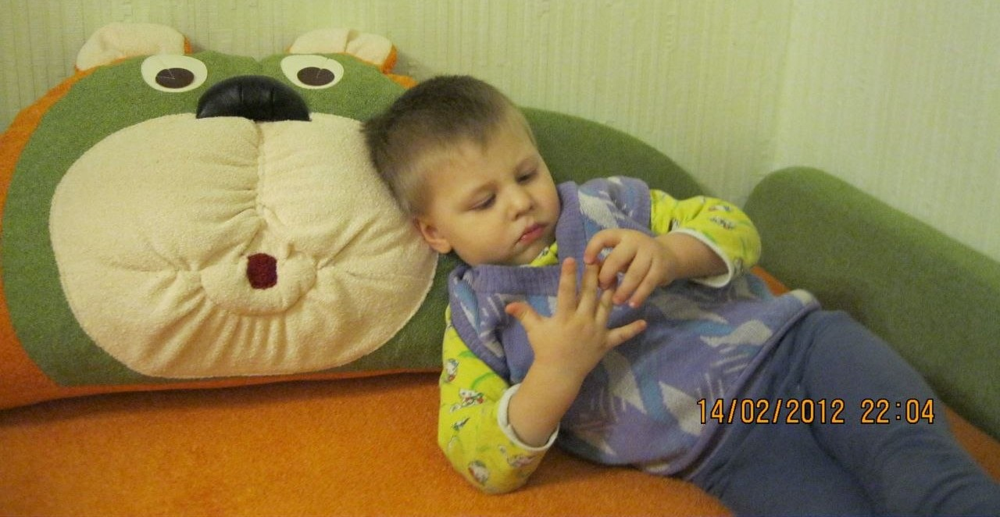
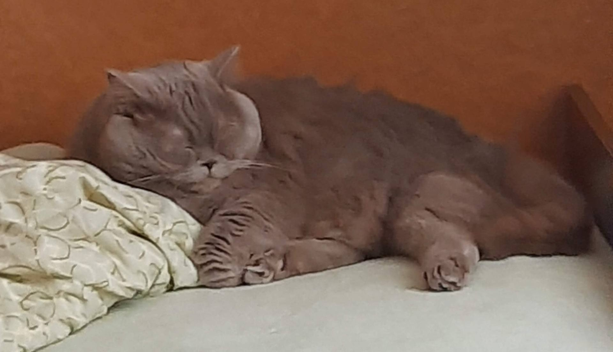
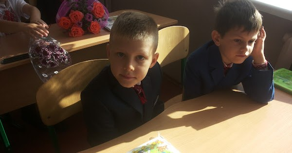

Мої спогади

Мій шлях до творчості
Я народився 21 лютого 2010 року в місті Фастів. З раннього дитинства мене тягнуло до творчості: я любив вигадувати та створювати щось нове.

Перші кроки
Змалку я почав малювати та ліпити. Я отримував величезне задоволення від процесу створення реальних речей зі своєї уяви.

Мій кіт
У мене є кіт, якого звати Аліса. Хоча це ім’я більше підходить для дівчинки, насправді він хлопчик. Ми хотіли взяти кішку, тому дали йому таке ім’я, і лише через рік зрозуміли, що це кіт. Аліса живе зі мною вже 10 років. Він став справжнім другом і частиною моєї родини. Я дуже люблю свого кота, адже він завжди поруч і дарує багато позитивних емоцій.

Мої шкільні роки
У перший клас я пішов у 6 років до Фастівського ліцею №1. Саме там розпочався мій шкільний шлях. У цьому навчальному закладі я провчився 9 років, здобуваючи знання, досвід і нових друзів.